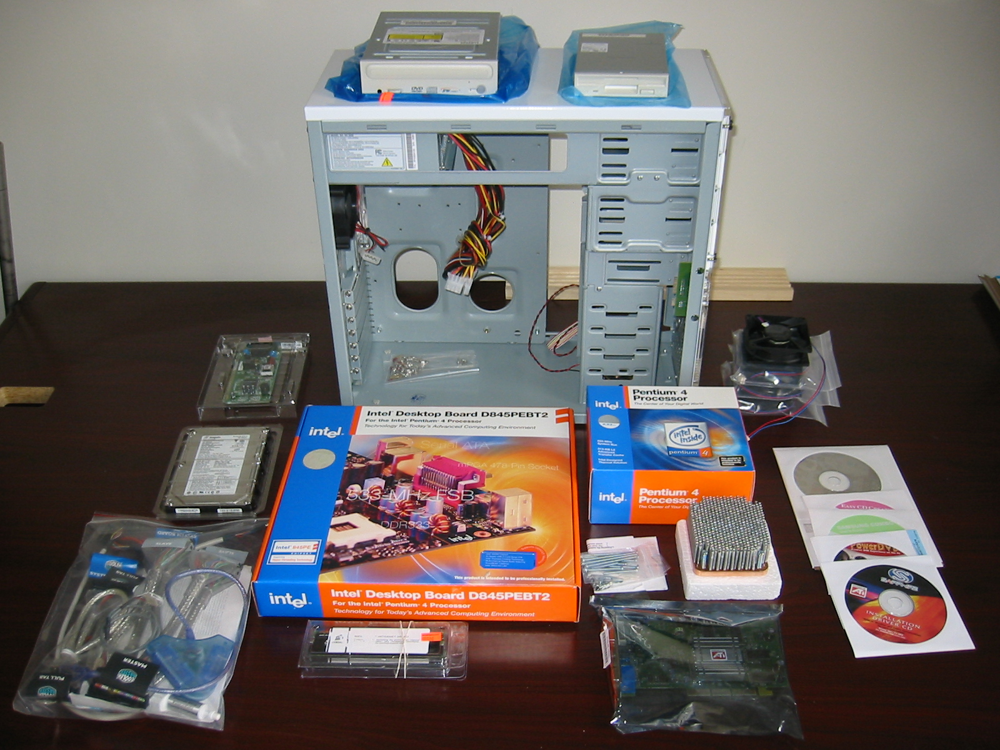

NAS Service
ROLES zfs, samba
The NAS group in the site.yml sets up a machine that
uses the "zfs" role for software raid/mirroring and the "samba" role
for file sharing to Windows/MacOS clients. Samba is configured on the
standard ports. If you are building a new machine or adding disks, be
sure to do adequate burn-in testing.
Everyone's use case is different, but my need is a simple fileserver with a shared common area for music and pictures, plus home directories for individual user files.
The zfs role creates zpools and filesystems. We just
use the default Debian monthly scrub/trim cron job. I trimmed the zfs
role to the basics. Look at
this role
if you want something that does ZVOLs, custom scrubs, zrepl, and other
things. We use the following ansible galaxy modules:
- community.general.zfs
- community.general.zfs_facts
- community.general.zpool_facts
If they are not already present, you can install by doing:
% ansible-galaxy collection install community.general
The samba role installs the samba server and creates
local accounts with samba access. You can create whatever shares you
want, but we can call out certain ones to be owned by the 'nas-data'
user and 'nas-data' group for common areas accessible by all users
(media files, family pictures, etc.)
The common role sets up SMART disk monitoring if we
set a list of drives to monitor.
Variables
The zfs_pools variable is a list of pools, with a
string describing the vdev, along any other settings. It looks
something like this.
zfs_pools:
- name: tank
vdev: >-
mirror
ata-BIGDRIVE1
ata-BIGDRIVE2
cache
nvme-FASTDRIVE
Specify pool properties: for a specific ashift,
or filesystem_properties: for things like compression or
case sensitivity. The role will create the pools if they do not exist,
or force import them if they are available, even if they were not
previously exported.
The zfs_filesystems variable lists filesystems, with
their properties.
The zfs_filesystems_properties_defaults are applied to
every filesystem.
zfs_filesystems:
- name: tank/myfs
properties:
mountpoint: /myfs
casesensitivity: mixed
quota: 20G
Some settings (casesensitivity, encryption, keyformat, pbkdf2iters, utf8only, and normalization) can only be set at creation time. Use the quota keyword to limit filesystem sizes. The value can use M/G/T units, but when doing so, Ansible will always show the value as changed because zfs reports current the quota in bytes.
For automatic snapshots, configure filesystems in
the zfs_snapshot_policy dictionary with templates defined
by the zfs_snapshot_templates dictionary. The daily, monthly,
weekly, hourly, or frequently (~15min) properties list the number of
copies to maintain. Zero indicates no snapshot.
zfs_snapshot_policy:
tank/myfs: { use_template: base }
zfs_snapshot_templates:
base:
frequently: 0
hourly: 24
daily: 7
weekly: 4
monthly: 6
yearly: 0
autosnap: yes
autoprune: yes
Sanoid runs every 15min from a systemd timer. If this is more
frequent than you need, perhaps preventing disks from standby, you can
modify it with the zfs_snapshot_timer variable.
Enable SMART monitoring on disks by listing them in the
smartd_drives variable. If set, smartmontools is
installed and smard.conf is created with periodic short and long
testing for each drive with email to the admin address. It does the
short test nightly and long test once per week. A long test can take
two days on a 20+T drive, so you may want to customize the checks by
setting smartd_scan_opts, or put your own freeform lines
into the config file by setting smartd_extra_scanlines.
smartd_drives:
- /dev/disk/by-id/ata-BIGDRIVE1
- /dev/disk/by-id/ata-BIGDRIVE2
# The default settings monitor all attributes, do automatic data
# collection, automatic attribute autosave, short self-test daily
# between 2-3am, and long self-test Saturdays between 3-4am. For big
# disks, consider changing long to monthly like "L/../05/./03", which
# runs on the fifth day of every month at 3am.
smartd_scan_opts:
"-a -o on -S on -s (S/../.././02|L/../../6/03) -m {{ admin_email }} -M test"
Set power management and spindown time for your HDDs with
the hdparm_drives variable. If set, hdparm is installed
and hdparm.conf is created. This variable is a dictionary with the
UUID device of the HDD and the parameters to set. Automatic power
management (APM) values 1-127 permit spin-down, while 128-254 do not
(See "hdparm -B"). Spin down times 1-240 are multiples of 5sec, while
241-251 are 1-11*30min (See "hdparm -S").
hdparm_drives:
/dev/disk/by-id/ata-BIGDRIVE1:
apm: 127
spindown_time: 240
/dev/disk/by-id/ata-BIGDRIVE2:
apm: 127
spindown_time: 240
NAS Samba users are created through the nas_users
variable, which takes a list of name, password, and other values.
They will have unix accounts with SMB passwords. They will be able to
SMB mount shared disks, but unless you add an SSH authorized key, they
can only log in on the console.
You can set smbonly if the unix account exists already
from some other action and you just want to set the SMB password. The
account must already exist at this point if you set to true.
nas_users:
- name: someuser
pw: "{{ vault_nas_someuser_pw }}"
# home: /homenas/someuser if want homedir elsewhere
# smbonly: true skip create unix acct
To change passwords after account creation, log as the user and
run smbpasswd. This will change SMB and unix passwords
together.
% smbpasswd Old SMB password: ***** New SMB password: ******** Retype new SMB password: ******** Password changed for user someuser
Managing the System
Use arcstat to get basic status on the memory cache or
use the arc_summary command for a more detailed report on
the ZFS subsystem.
% arcstat % arc_summary | more % arc_summary -d | more
Why These Packages?
The easy path is to buy a commercial NAS and just configure with their web interface. I prefer to assemble my own hardware, but did try TrueNAS. It was very smooth, but assumed total control of the machine. I want a machine that serves files, but can easily be used for general purpose things as well.
Disk sizes have gotten so stupendously huge that I didn't feel comfortable running a straight ext4 filesystem. I've rarely had disk problems, but resilvering a replacement disk on a ZFS mirrored setup is a lot simpler than finding and restoring double digit terabytes from backups.
I chose sanoid over zfs-auto-snapshot because sanoid has a simple configuration file and actually obeys it. I did not want frequent and hourly snapshots but zfs-auto-snapshot seemed to ignore the com.sun:auto-snapshot:frequently and hourly properties, contrary to the documentation.
Samba is an obvious choice if you are going to support Windows clients. NFS is also an obvious choice if any UNIX machines are in the mix. I originally built this for home use, which is mostly Windows with the occasional Linux box, so we'll see if that is sufficient.

Copyright © 2020-2026 David Loffredo, licensed under CC BY-SA 4.0.